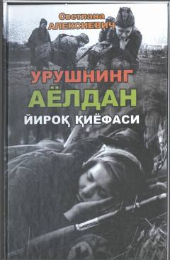

UAIkkinchi jahon urushida qatnashgan ayollarning jasorati va kechinmalari haqidagi hujjatli asar.
Ushbu kitob Ikkinchi jahon urushida qatnashgan ayollarning jasorati va urushning dahshatli oqibatlari haqida hikoya qiladi. Nobel mukofoti sovrindori Svetlana Aleksiyevich hujjatli-ocherk janrida yozilgan ushbu asarda urushning ayollar ko'zi bilan ko'rilgan qiyofasini ochib beradi.